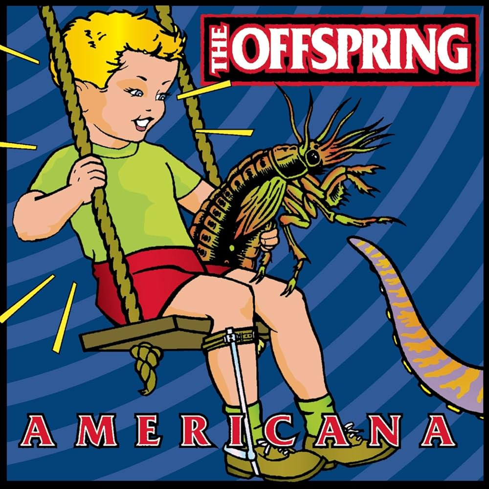

Americana - The Offspring (1998)

"Americana" es el quinto álbum de estudio de la banda estadounidense , lanzado en 1998. Este álbum marcó un punto culminante en la carrera de la banda, consolidando su éxito en la escena del punk rock y el rock alternativo. Con canciones que abordan temas sociales y personales, "Americana" incluye algunos de los mayores éxitos de The Offspring, como "Pretty Fly (for a White Guy)", "Why Don't You Get a Job?" y "The Kids Aren't Alright". El álbum fue muy bien recibido tanto por críticos como por fans, y se convirtió en uno de los discos más vendidos de la década de 1990, destacándose por su energía contagiosa y letras pegajosas.